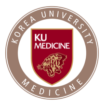
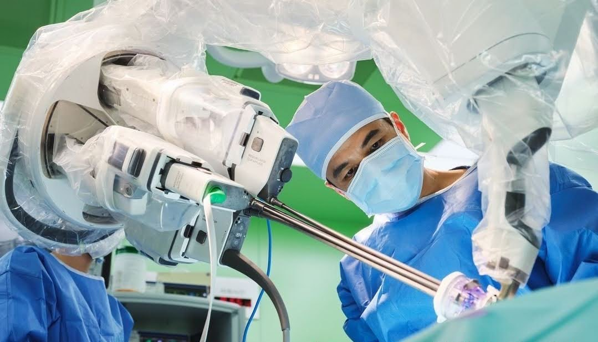
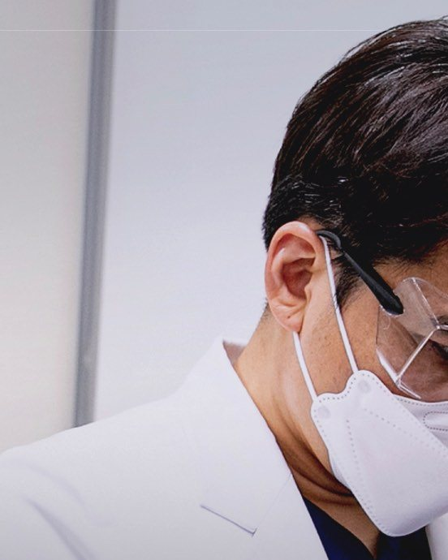
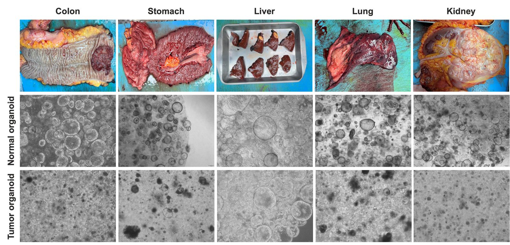
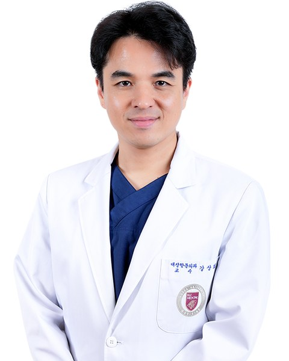
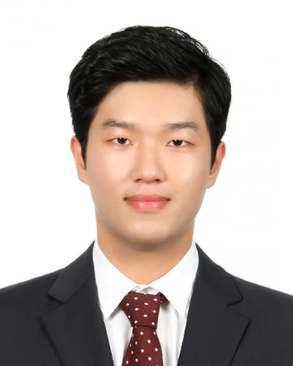
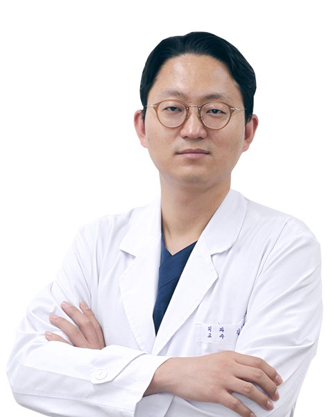
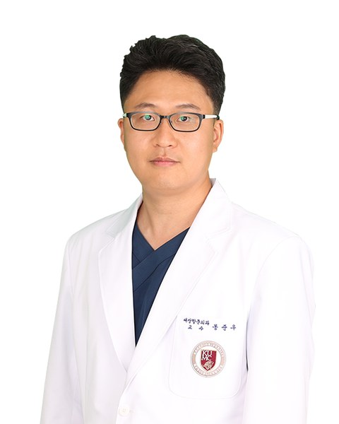
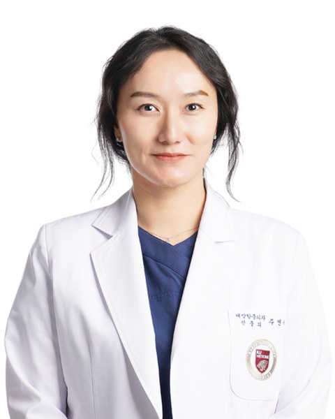

Korea University Guro Hospital · Department of Surgery
O2B Lab
Operation-to-Bench Translational Oncology, Korea University
"From the Operating Room to the Bench, and Back to the Patient."
We are a surgeon-led translational oncology laboratory. Unmet clinical needs identified in the operating room and clinic become bench questions, and bench findings are pressure-tested against real surgical specimens and outcomes before they are asked to matter for patients. Surgical oncologists across specialties collaborate here, bringing fresh tissue and a wide range of clinical contexts directly into the lab's research.

The operating room at Korea University Guro Hospital — where every research question in this lab begins.
Operation to Bench
Why "O2B"
As surgical oncologists, we see new clinical questions emerge from the field all the time, and we wanted to build the laboratory models needed to answer them ourselves. As surgeons, we obtain the freshest possible specimens directly, and we are continually asking what research model makes the best use of them.
O2B Lab exists to build those models directly from surgical specimens — patient-derived organoids, CAF co-cultures, PDX, organ-on-a-chip and multi-organ microphysiological systems, and the direct collection and analysis of patients' fecal samples — carried out ourselves and together with the best collaborating research teams. And in the end, our goal is to route what they teach us back into how patients are treated, not just into research.
This approach was shaped by two experiences: a period as a Visiting Assistant Professor in the Department of Systems Biology at MD Anderson Cancer Center (2016–2017), and seeing the most advanced microphysiological systems at Seoul National University's MBEL Lab (2025) — for a surgeon, an operation is both a direct act of treating a patient and a valuable opportunity to gather the resources needed to develop better treatments for them.
Operating room → bench → back to the patient. A closed loop, not a one-way pipeline.

Research Focus
We value the freshest specimens
Every project starts from tissue collected in the operating room and is worked in three directions at once: what the tumor is doing clinically, what its molecular profile says, and what a lab-built model of it can predict before the next patient is treated.

Multi-organ organoid & organ-chip platform
This is the lab's top research priority: multi-organ organoid culture built directly from patient-derived tissue — colon, liver, and other surgical specimens cultured together rather than as isolated single-organ models — to better approximate how organs actually interact in a patient. The platform underlies the lab's active work on microphysiological systems for immunotherapeutic and antibody-therapeutic safety assessment, and on clinical-concordance validation of patient-derived biomimetic models (see Grants below).
The photo above is our own bank of normal and tumor organoids derived from colon, stomach, liver, lung and kidney surgical specimens — the raw material for every multi-organ system we build.
Clinical & Translational Oncology
Cancer Genomics & Clinical AI
Preclinical & Biofabrication Platforms
Ongoing Research Grants
Current funding
All three are funded programs building and validating patient-derived biomimetic models, with the PI serving as subproject investigator.
Development of a Microphysiological System for Safety Assessment of Immunotherapeutics
Subproject Principal InvestigatorDevelopment of Predictive Evaluation Technology for the Immunotoxicity of Antibody Therapeutics
Subproject Principal InvestigatorClinical Concordance Evaluation Based on Patient-Derived Biomimetic Models
Subproject Principal Investigator
Sanghee Kang, M.D., Ph.D.
Professor, Department of Surgery
Korea University College of Medicine
Assistant Dean for International Affairs
Division of Colon and Rectal Surgery
Korea University Guro Hospital
Principal Investigator
Surgeon-scientist
Dr. Kang specializes in surgery for colorectal and rectal cancer and leads this lab. She also serves as an editor for surgical and oncology journals and holds standing committee roles across several fields, serving as a board member not only in clinical societies but also in the Korean BioChip Society. This is directly reflected in how our lab approaches study design and specimens — we never stop at a clinical perspective alone, but always carry out our work with a translational-research perspective as well. In particular, we make every effort to meet our collaborating research teams' unmet needs for specimens.
Editorial & Society Roles
- General Secretary, Korean Hernia Society
- Director of Information, Korean Association of Robotic Surgeons
- Board Member, Korean BioChip Society (Secretary, In Vitro Diagnostic Devices Division)
- Editorial Board Member & Public Relations Committee Member, Korean Society of Coloproctology
- Education Committee Member, Korean Society of Surgical Oncology
- Academic Committee Member, Korean Surgical Skills Study Group
Research Team
Across surgery, the lab, and the clinic
O2B Lab is a joint effort across two surgical divisions and the bench, held together by dedicated clinical research and administrative staff.

Bu-Gyeom Kim, Ph.D. 김부겸
Research Scientist, O2B Lab
Bench lead for translational pharmacology and cancer-cell biology (immunotherapy sensitization, apoptosis mechanisms).

Woo Young Kim, M.D., Ph.D. 김우영
Professor, Division of Breast and Endocrine Surgery
As a breast and endocrine oncology specialist, he plays an essential role in extending the lab's research platform.

Jun Woo Bong, M.D., Ph.D. 봉준우
Professor, Division of Colon and Rectal Surgery
Colorectal surgical outcomes research; co-leads the endoscopy-based gut microbiome study.

Yeonuk Ju, M.D., Ph.D. 주연욱
Professor, Division of Colon and Rectal Surgery
Colorectal surgical outcomes research; co-leads the endoscopy-based gut microbiome study.
Selected Publications
Recent papers, 2023 – 2026
A selection spanning clinical outcomes research, translational pharmacology, and machine learning in surgical care. * first author · † corresponding author.
- Yim SY, Kim H, Kim TH, Kang SH, Lee Y, Choi E, et al. Identifying sorafenib benefit among hepatocellular carcinoma patients: a transcriptomic and genomic approach. JHEP Reports. 2026;101742.
- Bong JW, Lee H, Jeong S, Kang S†. Older age threshold for oxaliplatin benefit in stage II to III colorectal cancer. JAMA Network Open. 2025;8(8):e2525660.
- Cheong C, Doo HM, Ju Y, Bong JW, Kang SH, Lee SI, et al. Polyglycolic acid–cyanoacrylate complex for prevention of major intestinal anastomotic leakage in a rat model. Annals of Surgical Treatment and Research. 2025;109(5):335–343.
- Kim DY, Kim BG, Yun HM, Kim OH, Kang S, Bong JW, et al. Trans-cinnamaldehyde enhances TRAIL-induced apoptosis through ER stress–mediated upregulation of DR5 in colorectal cancer cells. Scientific Reports. 2025;15(1):38840.
- Ju Y, Kim BG, Gim JA, Bong JW, Cheong CO, Oh SC, et al. Synergistic anticancer effects of fibroblast growth factor receptor inhibitor and cannabidiol in colorectal cancer. Nutrients. 2025;17(16):2609.
- Kim KE, Bae SU, Lee SH, Lim DR, Ha HK, Kim J, et al. The articulated laparoscopic total mesorectal excision for rectal cancer (ATOME trial): a single-arm, prospective trial with pre-specified comparison to robotic surgery. Trials. 2025;26(1):260.
- Cho N, Jeong I, Ahn S, Gil H, Kim Y, Park J, Kang S, Lee H. Machine learning to assist in managing acute kidney injury in general wards: multicenter retrospective study. Journal of Medical Internet Research. 2025;27:e66568.
- Ju Y, Bong JW, Cheong C, Kang S, Min BW, Lee SI. Effective utilization of polypectomy in endoscopic salvage treatment of rectal neuroendocrine tumors: a retrospective cohort study. Annals of Surgical Treatment and Research. 2024;107(3):151–157.
- Kim BG, Kim BR, Kim DY, Kim WY, Kang S, Lee SI, Oh SC. Cannabidiol enhances atezolizumab efficacy by upregulating PD-L1 expression via the cGAS–STING pathway in triple-negative breast cancer cells. Cancer Immunology Research. 2024;12(12):1796–1807.
- Yang SS, Kye BH, Kang SH, Kim CH, Kim JH, Kim WR, Lee KY, Park IK. Intracorporeal anastomosis in minimally invasive right hemicolectomy: a nationwide survey of the Korean Society of Coloproctology. Annals of Surgical Treatment and Research. 2024;107(2):59–67.
- Bong JW, Kim JY, Ju Y, Cheong C, Kang S, Lee SI, Min BW. Optimal withdrawal time in initial surveillance colonoscopy after colorectal cancer surgery. Annals of Surgical Treatment and Research. 2024;107(4):212–220.
- Kim BR, Kim DY, Tran NL, Kim BG, Lee SI, Kang SH, et al. Daunorubicin induces GLI1-dependent apoptosis in colorectal cancer cell lines. International Journal of Oncology. 2024;64(6):1–13.
- Cho NJ, Jeong I, Kim Y, Kim DO, Ahn SJ, Kang SH, et al. A machine learning-based approach for predicting renal function recovery in general ward patients with acute kidney injury. Kidney Research and Clinical Practice. 2024;43(4):538.
- Jeong YS, Eun YG, Lee SH, Kang SH*, Yim SY, Kim EH, Noh JK, et al. Clinically conserved genomic subtypes of gastric adenocarcinoma. Molecular Cancer. 2023;22(1):147.
- Bong JW, Kang S*, Park P. Multicenter study of prognostic factors in paraaortic lymph node dissection for metastatic colorectal cancer. Annals of Surgical Treatment and Research. 2023;105(5):271.
- Bong JW, Na Y, Ju Y, Cheong C, Kang S, Lee SI, Min BW. Nomogram for predicting the overall survival of underweight patients with colorectal cancer: a clinical study. BMC Gastroenterology. 2023;23(1):39.
- Kang AR, Kim JL, Kim YH, Kang S, Oh SC, Park JK. A novel RIP1-mediated canonical Wnt signaling pathway that promotes colorectal cancer metastasis via β-catenin stabilization-induced EMT. Cancer Gene Therapy. 2023;1–11.
- Yoon S, Ji WB, Kim JS, Hong KD, Um JW, Min BW, Lee SI, et al. Long-term oncologic outcome of D3 lymph node dissection for clinical stage 2/3 right-sided colon cancer. International Journal of Colorectal Disease. 2023;38(1):42.
This selection covers 2023–2026. For the complete, continuously updated list of peer-reviewed publications, see ORCID: 0000-0002-6097-8831.
Join O2B Lab
We take graduate students, postdocs, and clinical fellows who want to work on real surgical specimens and see their findings tested against patient outcomes — not just published. Backgrounds in bioinformatics, organoid/organ-on-chip biology, or clinical data science are especially welcome.